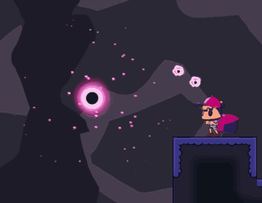
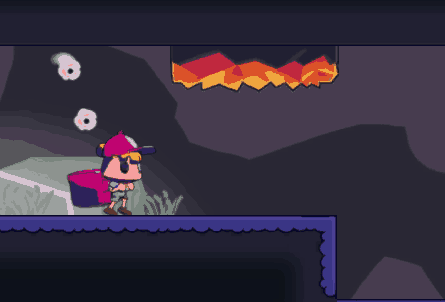
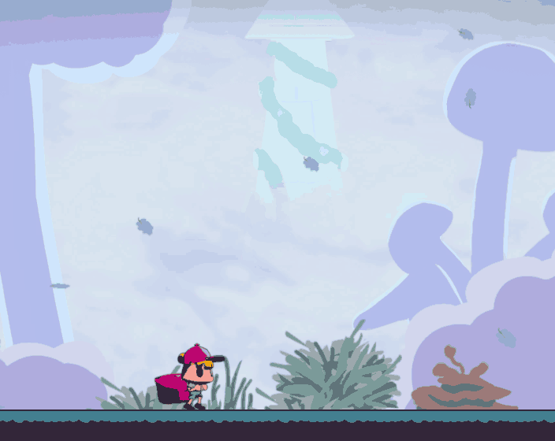

Royal Order
Quick info
Engine:
TGE (School provided Engine)
Focus:
Particles
I started out working on the player as well as a prototype version of the collision
system,
which was intended only for testing and quickly gathering metrics. This task was later
delegated to another programmer who took over player movement and the collision systems.
After spending some time trying to understand how our rendering worked and
attempting to build a particle system, another programmer solved the rendering, and we
then collaborated to get the particles rendered correctly.


Once rendering started working, I continued to iteratively develop the particle system
throughout almost the entire project, adding functionality based on the needs and
requests from other disciplines.
I was also responsible for creating all particle textures
according to our artists' requirements. Additionally, I implemented all particle
systems in all game objects that require particles.
We received feedback that it was difficult to tell whether bosses were vulnerable or not, and when or if they were taking damage. I solved this by making the boss flash in different colors at different stages.


Svante
Jakobsson
and I also put our heads together to implement animated particles, which can be
seen on the leaves in the first level.
PNG → DDS
I was responsible for converting all PNG files to DDS, which I solved using a simple command:
find . -type f -name "*.png" -exec sh -c 'convert "$0"
"${0%.png}.dds"' {} \;
Explaination:
find . -type f
searches for files starting from the current directory
-name "*.png"
finds all files ending with .png
-exec sh -c 'convert "$0" "${0%.png}.dds"' {} \;
runs `convert` on all PNGs and outputs, for example, `example.dds`
This helped us convert 300+ PNGs to DDS in a matter of seconds saving us alot of time from
manualy converting all images.